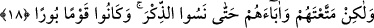

18. Onlar: “Seni tenzih ederiz. Seni bırakıp da başka dostlar edinmek bize
yaraşmaz; fakat sen onlara ve atalarına o kadar bol nimet verdin ki, sonunda (seni)
anmayı unuttular ve helâki hak eden bir kavim oldular.” derler.
Sanki “Onlar cevap olarak ne dediler?” diye sorulmuş ve şöyle cevap verilmiştir:
“Onlar: “Seni tenzih ederiz.” Bu ifâde ya onlara söylenen sözden dolayı şaşkınlık için
ya da Allah Teâlâ’yı ortaklardan tenzih etmek içindir.
Önceki âyetteki “Allah’tan başka taptıkları şeyler” ifâdesini putlar olarak tefsir
etmek de mümkündür. Putlar her ne kadar hiç bir şeye güçleri olmayan cansız varlıklar
da olsa Allah onlara hayat verip onları hitâba, soru sormaya ve cevap vermeye elverişli
kılabilir.
“Seni bırakıp da başka dostlar edinmek bize yaraşmaz;” Yâni kendilerine ibâdet
ettiğimiz başka mâbudlar edinmek bizim için doğru ve düzgün olmaz. Bizde Allah’tan
başka mâbud edinmeye mâni bir hal olan ismet veya böyle bir şeye gücü yetmeme
durumu olduğu halde onları bizi dost edinmeye zorlamak bir yana bizim başkasını
senden başka dost edinmeye zorlamamız nasıl düşünülebilir?
Şeyhzâde der ki: “Allah, onların “…bize yaraşmaz” sözünü, bir kimseyi Allah’tan
başka dost edinmeye çağırmalarının imkânsızlığından kinâye kılmıştır. Çünkü bu sözün
açık mânâsı maksadı ifâde etmemektedir. Bu sözle asıl kasdedilen onların kulları
saptırdıkları ve Allah’tan başka dostlar edinmeye sevk ettikleri şeklinde kendilerine
nisbet edilen şeyleri reddetmektir.
et-Te’vîlâtü’n-Necmiyye’de der ki: “Onlar Allah Teâlâ’yı ortağı olmaktan tenzih
ettiler. Kendilerini ise Allah’tan başka bir dost edinmekten ve insanların Allah’tan
başkasına ibâdet etmesine rızâ göstermekten tenzih ettiler. Putlara bir bak nasıl
Allah’tan başkasına ibâdetten ve O’ndan başkasını dost edinmekten uzak olduklarını
ifâde ettiler ki Allah’tan başkasına tapan insandan üstün oldukları görülsün. Bu sebeple
Allah onlar hakkında: “İşte onlar halkın en şerlisidirler.” (el-Beyyine, 98/6)
buyurmuştur.
“Fakat sen onlara ve atalarına o kadar bol nimet verdin” Fakat sen onları ve
babalarını nimet verip yaşattın. Yâni biz onları saptırmadık, fakat sen değerini bilip
şükretmeleri için onları ve babalarını uzun ömürden ve çeşitli nimetlerden
faydalandırdın. Onlar ise şehvetlere daldılar ve onların içinde boğuldular “ki, sonunda
(seni) anmayı unuttular” senin zikrinden gâfil oldular ve kendilerine verilen öğütleri
terk ettiler. Ya da senin nimetlerini düşünmeyi, âyetlerin üzerinde tefekkürde bulunmayı
terk ettiler. Kötü tercihleri sebebiyle hidâyete sebep olan şeyleri azgınlık için vesile
kabul ettiler.
Burada ıdlâl/saptırma onların kendi kesbleriyle olduğu için kendilerine, Allah’ın
onlar hakkında yaptığı ve onları azgınlığa sevk etmesi bakımından da O’na nisbet
edilmiştir. Sanki âyette: “Biz onları saptırmadık ve sapıklığa da sevk etmedik. Fakat sen